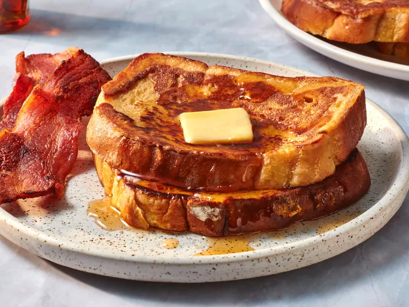

French Toast
This fluffy French toast recipe is crisp on the outside, but perfectly soft and tender on the inside.
Ingredients
- Bread
- Eggs
- Flour
- Milk
- Sugar & Salt
- Cinnamon
- Vanilla
Steps
- Slowly whisk the milk into the flour, then whisk in the remaining ingredients.
- Saturate the bread slices in the batter.
- Cook the French toast on a lightly oiled griddle or pan until golden on both sides.